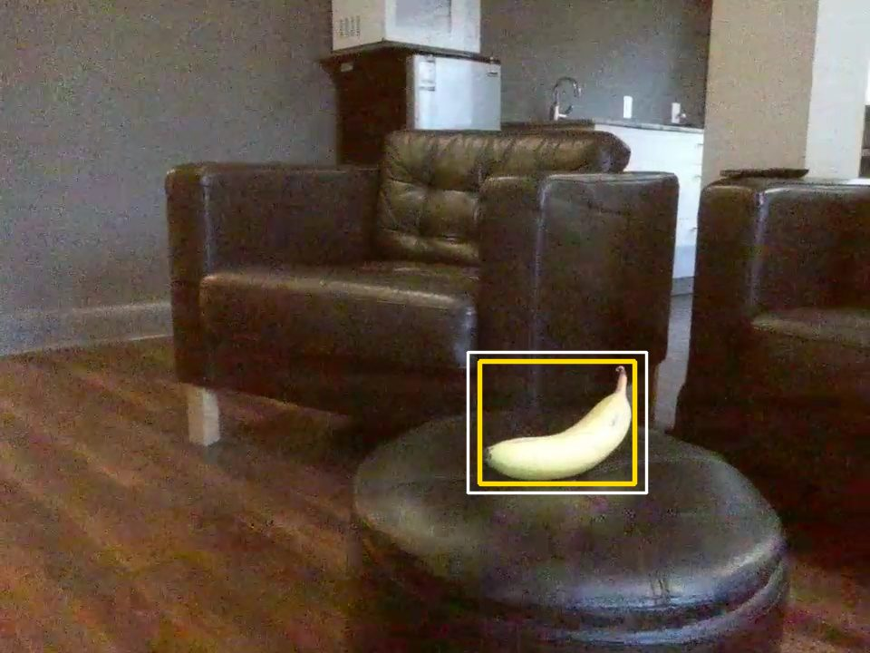
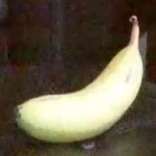

Part 01 · Perception
Banana recognition
1.1Feeding
One key behaviour of the fruit fly we wanted to model in our drone was the feeding. Now due to limitations on our laptops and sanity, we decided to stick with only Bananas, and their different types of ripeness: freshripe, freshunripe, overripe, ripe, rotten, unripe. So our goal was that the drone captures images through its camera, checking if any bananas exist and if they do, then classify them into one of six categories, with the fly choosing to go to the ones that are most rotten. To do this, we built a 2 stage pipeline - a pretrained detector that locates the banana, and passes it onto a classifier we built that judges the ripeness.

1 · DetectYOLOv8 finds the banana, 97% sure

2 · Crop+8% each side, 224 × 224
3 · ClassifyMobileNetV2 picks the most likely class
Drone/flight_frames/). Yellow is the YOLO box, white is the box after the 8% expansion. Detector: fine-tuned YOLOv8n at 960 px. Classifier: the original checkpoint.1.2Connecting the two stages
Now a bit on how the two stages are connected. Each frame from the drone’s eyes is sent to the YOLOv8 model, which returns a bounding box around every banana it finds. Because the bounding box is often a bit tight, each box is expanded by 8% of its width and height so that the tips of the bananas aren’t cut off. The banana is then cropped out of the frame and resized to 224 x 224 pixels, and normalized using the ImageNet mean and standard deviation. Then each of the bananas are fed into the MobileNetV2, which will output a probability between 0-1 for each of the 6 banana classes, with the most likely of the classes, becoming the label of the banana. The final output from this stage is a list of the banana bounding box, YOLO’s confidence that it’s a banana, the label for the banana, and the classifier’s confidence on the label. The decision to split the process into 2 stages, helped with us not having to draw the bounding boxes for the training - YOLO already knew what a banana is, we could just use a dataset containing the bananas grouped by the classes. It also meant that we could upgrade each of the 2 stages separately, which we did by swapping in a larger YOLO model, when the drone is hovering. The full pipeline runs at ~22 frames per second with the smaller model (Drone is moving), and at about ~11 frames per second with the larger YOLO model (Drone is hovering / sharp eyes detector)
wants_zoom in feeding_behaviour.py).1.3Stage one: YOLOv8
In the first stage of the pipeline, we used the YOLOv8 (You Only Look Once) model, which is an object detector that finds every object in an image in just one pass of the network. It predicts a bounding box, and a set of class scores for each object. We used the nano version of the model, pretrained by Ultralytics, which consists of roughly 3.2 million parameters. One of these classes - Class 46 - is “banana”, so instead of training our own detector, we restricted the YOLO model to that class and fine tuned it. A detection is only treated as food if the YOLO is 20% confident it is a banana (30% for the sharp-eyes detector). The main change we made was the image resolution. By default, YOLO shrinks the image to 640 px on its longest side, but the Tello’s image resolution is 960 x 720. A banana kept at a distance away with the defaults would lose \(1 - (640/960)^2 \approx 56\%\) of its pixels before YOLO can even see it. Running the YOLO model at the full 960 pixels raised the detection rate of a banana filling in 1.5% of the frame from 1 in 12 frames to 9 in 12 frames. This however, extra increase in performance caused roughly double the processing time. This was a trade that we deemed to be worth it. For bananas even farther away, we added a “sharp-eyes” mode using the larger YOLOv8 model and a confidence threshold of 30%. For banana’s filling in 1% of the frame, it found bananas in 22 of 24 frames compared to the smaller YOLOv8 nano, which only found it in 7 of 24 frames. Since it is about twice as slow, this only kicks in when the drone is hovering in place scanning for food, so that the control loop is fast enough for the other neurons and actions.
1.4Dataset
Before we get into the second stage of the pipeline, I wanted to take a moment to talk about the dataset that we used to train the second model. This dataset came from Roboflow and it consisted of 5616 images of bananas, all classified according to the ripeness. The images in the dataset contained 3931 for training, 1123 for validation and 562 for testing. The dataset was skewed however, with heavy class imbalance in which rotten had 1340 training images while unripe had only 133 images. Another issue with the dataset was that the images in the dataset were close-up and well-lit, compared to the actual shots from the drone where they are instead from greater distances, as well as varying lighting conditions and sometimes motions as well. The training images also had an augmentation applied during training, to avoid overfitting. These augmentations were horizontal flips, rotations of up to 15°, and had their brightness, contrast and saturation vary by up to 20%
Each pixel \((x, y)\) is rotated about the image centre \((c_x, c_y)\) by a new random angle \(\theta\) every time the image is loaded (transforms.RandomRotation(15) in BananaModel/dataset.py).
1.5Stage two: MobileNetV2
The second stage of the pipeline consists of the MobileNetV2 model. The reason we chose this model over any of the other models was that it’s small, roughly 2.23 million parameters and it’s fast on a laptop’s CPU. MobileNetV2 achieves this by replacing the standard convolutions for depthwise separable convolutions, which filter each colour channel separately before combining them. This allows it to cut the amount of calculations needed drastically while still keeping most of the accuracy. Because we had a limited dataset size (~4000 training images) we used transfer learning. This is a technique in which instead of retraining the whole model, we freeze the beginning layers of the model. For us, we started with MobileNetV2 which has been trained across ImageNet, a dataset containing over 1 million images, and 1000 categories, so it had already learnt how to recognize edges, colours and textures. We then froze all those feature layers, not letting their weights shift and replaced the model’s original 1000 class output layer to our custom six class output layer. The new layer applies dropout with a rate of about 20%, randomly switching off a fifth of the features so the model doesn’t rely too heavily on any single feature, followed by a linear layer that maps the 1280 features down to 6 scores. A softmax function is then applied turning these scores into a probability, and the class with the highest probability becomes the class of the banana. As a result of our earlier efforts, only 7686 of the model’s 2.23 million parameters were trained by us, about 0.34% of the network. This made training fast and reduced the risk of overfitting on our small dataset. The new layer was trained with cross-entropy loss and the Adam optimizer with a learning rate of 0.001, in batches of 32 images. After every pass of the training data (an epoch), we tested the accuracy of the model on the validation set, and saved a copy of the best found weights so far. Training was run for up to 50 epochs, stopping earlier if no improvement was found for 10 epochs in a row. This was to prevent memorizing the training images, after it had stopped getting better at classifying bananas. The final model took about 19 ms to classify a banana on a laptop CPU.
Softmax
The linear layer gives six scores \(z_1, \dots, z_6\). Softmax turns them into probabilities that add up to 1:
Cross-entropy loss
For a batch of \(B = 32\) images where image \(i\) has true class \(y_i\), the loss is the average negative log-probability given to the right answer:
Adam
With gradient \(g_t = \nabla_\theta \mathcal{L}\) at step \(t\), Adam keeps running averages of the gradient and its square, corrects them for starting at zero, and steps each weight by its own scaled amount:
\(\eta = 0.001\). \(\beta_1 = 0.9\), \(\beta_2 = 0.999\) and \(\epsilon = 10^{-8}\) are PyTorch's defaults, which BananaModel/train.py doesn't change. Only the 7,686 weights of the new layer are in \(\theta\).
1.6Results
We evaluated the classifier on a test set of the dataset of 562 images, that were never used during training or model selection. It correctly classified 526 of them, with an accuracy of 93.6%. With our classes being so unbalanced we also reported the F1 macro score which weighs each class equally, regardless of the amount of images in them. This was 92%, showing the model works well across all the classes, not just the ones with the most images. Most mistakes (22 of 36 errors) were between neighbouring classes, which makes sense as bananas at adjacent stages can look quite similar. The weakest class was ripe with a recall of 78.8%. I suspect there are 2 reasons involved for this. The first reason being since it is in the middle of the classes, it can be confused with both adjacencies: freshripe and overripe. Of the mistakes 9 ripe bananas were labeled fresh ripe, and 6 over ripe were labeled ripe. The other reason being that both of these neighbouring classes have a decent bit more training images, 704 for freshripe, and 783 for overripe. This likely pulled the borderline images towards them. One unusual pattern was occasional confusion between rotten and unripe. This could be because heavily browned bananas and deep green bananas are both dark, but we did not investigate this further. In terms of speed, the classifier takes about 19 ms per banana, and the full pipeline runs at 22 fps. Since the Tello drone streams at 30 frames, this is fast enough to process most frames as they arrive. These results are on the test set though, and not on the flight tests which the next section is about.
| true ↓ · predicted → | freshripe | freshunripe | overripe | ripe | rotten | unripe |
|---|---|---|---|---|---|---|
freshripe | 101 | · | · | 1 | · | · |
freshunripe | · | 83 | · | · | · | · |
overripe | · | · | 107 | 6 | · | · |
ripe | 9 | · | · | 41 | 2 | · |
rotten | 4 | · | 6 | 2 | 169 | 4 |
unripe | · | · | · | · | 2 | 25 |
BananaModel/README.md). Rows are the true class, columns what the classifier said. The diagonal is correct, and the darker a cell, the more images landed there. Most off-diagonal counts sit next to the diagonal: neighbouring ripeness levels.| Class | Recall | Precision | F1 |
|---|---|---|---|
freshripe | 99.0% | 88.6% (101/114) | 93.5% |
freshunripe | 100% | 100% (83/83) | 100% |
overripe | 94.7% | 94.7% (107/113) | 94.7% |
ripe | 78.8% | 82.0% (41/50) | 80.4% |
rotten | 91.4% | 97.7% (169/173) | 94.4% |
unripe | 92.6% | 86.2% (25/29) | 89.3% |
| Macro average | 92.7% | 91.5% | 92.0% |
1.7Real-world tests
In the real world tests, we found a couple of issues. The label sometimes flicked between rotten and fresh ripe from frame to frame. We believe this was due to the mismatch between the close up well-lit training photos and the photos from the drone which had varying lighting and distance. To reduce the flicker, we smoothed the ripeness label over the last 5 frames, by taking the most common prediction, so a single wrong frame can no longer change the drone’s decision. With this in place the drone chooses the most rotten banana in its view to go eat from just as real fruit flies do. The detector also has some limitations as well. Because we had not yet fine tuned the YOLO on our settings, it could sometimes miss bananas that are weirdly shaped or oriented, or partly hidden.
1.8Fine-tuning on our own flights
To close the gap between the real world tests and the out of the box models, we ended up fine tuning both stages of the pipeline from our own flights. We started by adding another parameter (--save-frames) to save the frames of the flight twice every second. This was run with 6 practice flights, where we then saved the last flight for validation. A much larger YOLO Model (YOLO11x) was then run over those frames to classify the bananas on each frame. It was then reviewed and verified by us, to make sure all the bananas were in the correct bounding box and there were no other random bounding boxes. Frames with no bananas were also kept, so the model knew when not to classify a banana and what a wall, hand, or floor was. We then manually labeled each of the bananas from the frames as one of the 6 labels for ripeness. We held out a full flight rather than a random selection of frames, as frames half a second apart are nearly identical, so a random split would only test the model on frames it already knew of. On the held-out flight, the fine-tuned detector found 99% of bananas, compared with 77% for the original model, and 100% of distant bananas (those filling less than 1% of the frame), compared with just 20%. The ripeness classifier was also retrained on the same bananas, and its accuracy rose 60%. The original classifier labeled almost all the bananas from the drones view as rotten, while the finetuned one correctly labeled the bananas as ‘rotten’ and ‘freshripe’
RReferences
- Jocher, G. et al. Ultralytics YOLOv8. (2023). github.com/ultralytics/ultralytics
- Sandler, M. et al. MobileNetV2: Inverted Residuals and Linear Bottlenecks. CVPR (2018).
- Lin, T.-Y. et al. Microsoft COCO: Common Objects in Context. ECCV (2014).
- Kingma, D. P. & Ba, J. Adam: A Method for Stochastic Optimization. ICLR (2015).